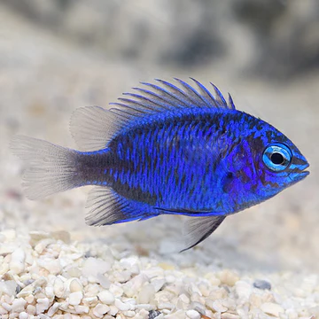
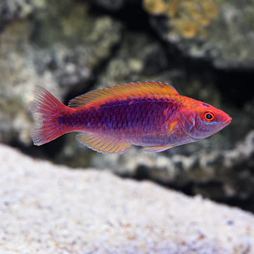
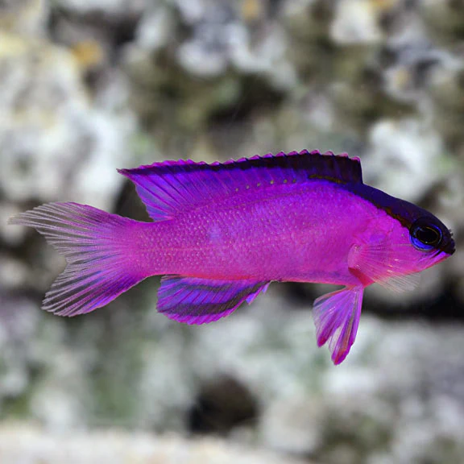

The Royal Gramma Basslet brings a burst of color to any saltwater aquarium. It has a bright purple to violet colored anterior contrasted by a vibrant yellow posterior. Coveted for both its unique color pattern and relatively small adult size, Gramma loreto is a great beginner fish that well suited for small nano reef systems.
Native to the deep-water reefs of the Caribbean, this member of the Grammidae family prefers extensive rockwork caves in which to hide and somewhat subdued lighting. Since it demonstrates territorial aggression towards its own kind, the Royal Gramma Basslet should be housed singly. However, most Royal Gramma Basslets are peaceful towards tankmates of similar size and temperament.
For the best care, keep the Royal Gramma Basslet in reef systems of at least 30 gallons. Since it is a carnivore, feed a varied diet of meaty fare, including brine shrimp, mysis shrimp, and quality frozen preparations.click here for more!
2. Blue Sapphire Damselfish

OVERVIEW
The Blue Sapphire Damselfish originates from Indonesia, and is a brilliant blue coloration with black outlined fins. This species can quickly turn completely black when stressed which allows them to evade predators. Like many of the other damselfish within the Chrysiptera genus, it can become aggressive towards slower moving tank mates. Be sure the aquarium has plenty of live rock for territories and hiding.
The Blue Sapphire Damselfish is hardy and is a good fish for beginners. They also make an ideal companion fish for a saltwater aquarium of over 30 gallons, and are safe with corals and invertebrates. As the fish matures it may become aggressive, causing problems with the selection of other species of fish added to the aquarium. If keeping with other damselfish, provide plenty of live rock with multiple hiding places to break up territories and decrease aggression.
The Blue Sapphire Damselfish's diet should consist of quality flake foods, frozen meaty foods such as brine or mysis shrimp and occasionally dried seaweed offered on a feeding clip.click here for more!
3. Multicolor Lubbock's Fairy Wrasse

OVERVIEW
The Multicolored Lubbock's Fairy Wrasse is also known as the Lubbock's Fairy Wrasse. The male has a bright yellow and red body with blue, brown, and white ornamentation. The females generally do not have quite as bold markings as the males. When courting, the male will display an increased color intensity.
A 50 gallon or larger aquarium, either fish-only or reef, with a shaded area is recommended. The Lubbock's Fairy Wrasse will not bother fish or invertebrates, making them a perfect addition to any reef aquarium. These fish do like to jump, so a tight fitting canopy is required.
The Multicolor Lubbock's Fairy Wrasse diet should include vitamin enriched frozen mysis shrimp, vitamin enriched frozen brine shrimp, and other meaty foods along with a high quality marine flake and marine pellet food.click here for more!
4. Black Cap Basslet

OVERVIEW
An excellent choice for a reef aquarium, the Black Cap Basslet is a threat to only the smallest invertebrates such as Copepods, Isopods, or Amphipods. Provide at least a 30 gallon tank with rock caves to hide in. Black Cap Basslets can become territorial once established, so they should not be kept with other basslets. Because they tend to be deep-water dwellers, they do better in an aquarium with slightly subdued lighting.
Black Cap Basslets will do well on a diet of meaty foods including marine fish, crustacean flesh, mysis shrimp, and quality frozen preparationsclick here for more!